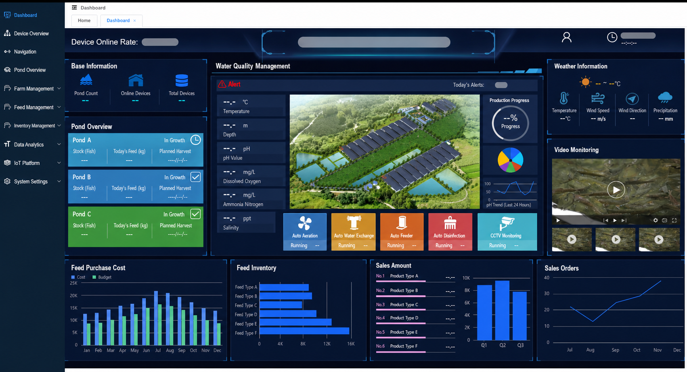
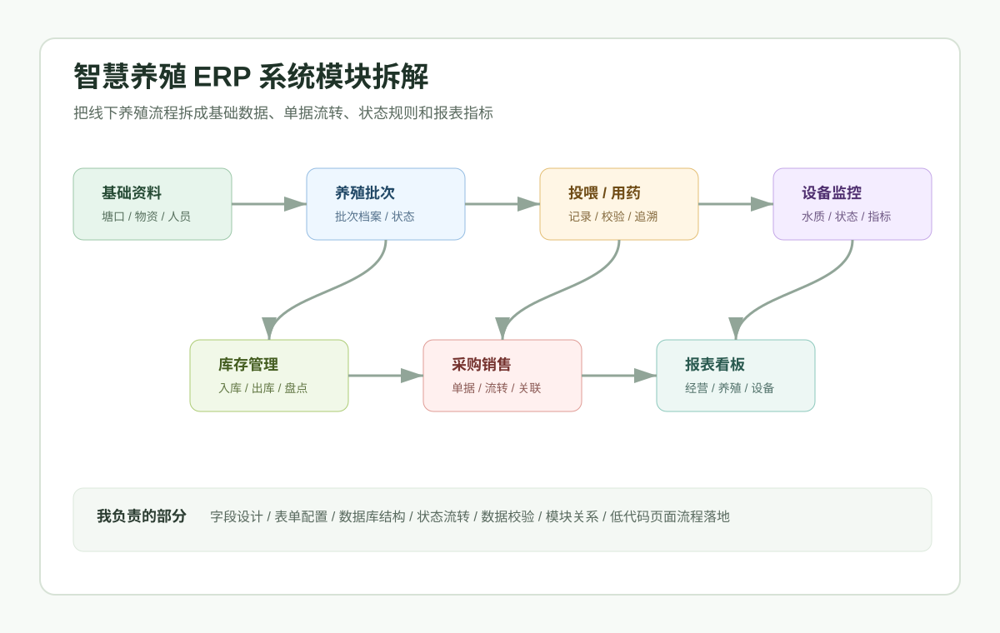
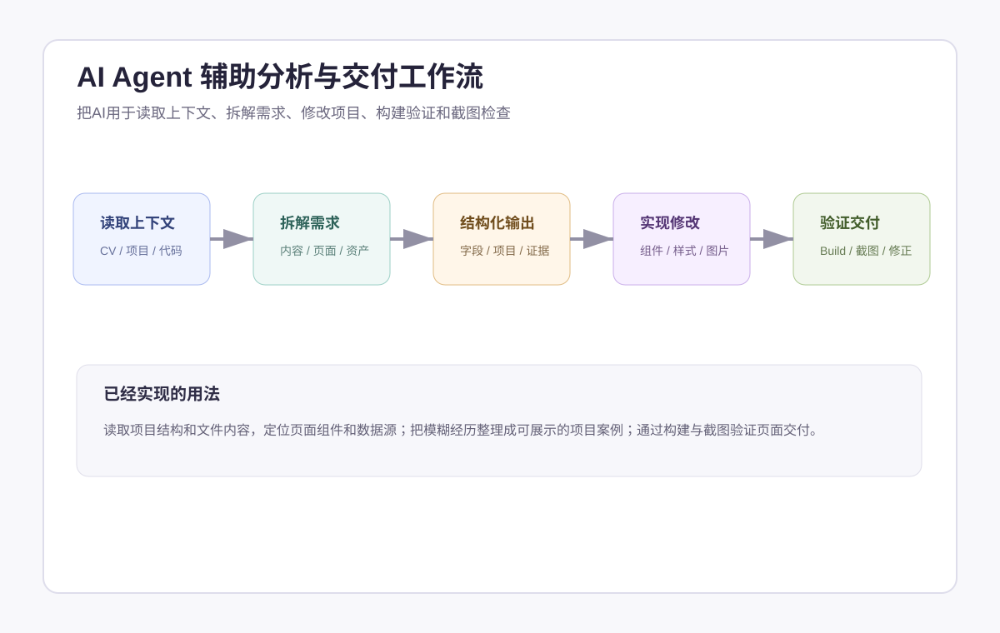
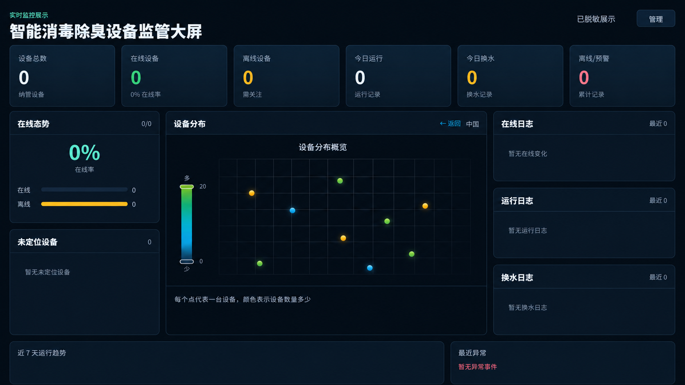
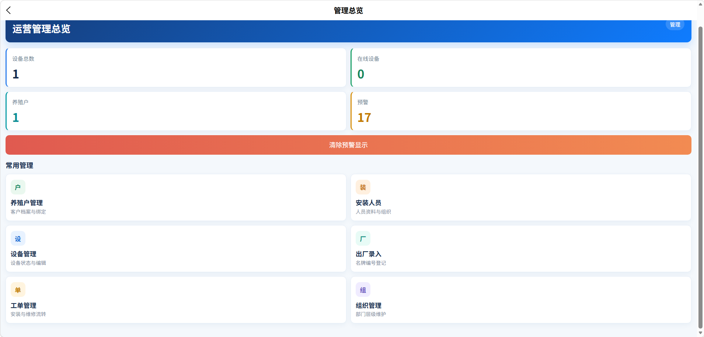

先把角色、规则、状态、接口和异常收敛成同一套系统语言。
LIGE / FDEFORWARD DEPLOYED ENGINEER
FDE / 现场交付工程师
把现场问题，
推进成 可运行、
可交接的系统。
我从业务现场开始，负责把问题建模、原型验证、系统集成、联调验收和团队交接推进到同一个结果里。AI、全栈与 IoT 是交付手段，不是孤立的标签。
FDE DELIVERY LOOP现场理解 → 问题建模 → 原型验证 → 系统集成 → 联调验收 → 团队交接
证据边界 · 公开工程提供源码或测试；公司项目与私有改造以脱敏案例、职责范围和面试说明为准。
IMAGE POLICY · 真实项目截图均经 AI 辅助脱敏；方法图会明确标注为示意。
EVIDENCE BOUNDARY / 01
先看现场、交付物和验证方式
COMPANY CASE / AI-SANITIZED

真实项目截图 · AI 辅助脱敏THE VALUE I BRING
FDE 的价值，是把复杂上下文推进到结果。
每一步都有可评审产物，AI 加速执行，工程判断仍由人负责。
业务看到可用结果，研发追得到依据，系统留得下演进空间。
HOW THE SYSTEMS CONNECT
FDE 交付链：从现场信号到系统接手
这不是堆砌技术名词，而是我如何把问题、规则、界面、设备和验证串成一条可解释的交付链。
01 / CAPABILITY PROFILE
FDE 的核心：把复杂上下文收敛成可执行系统
把 AI、业务、原型、协作和工程实现放在同一张能力图里，招聘方可以直接看到我能承担什么工作、凭什么这样判断。
CORE SIGNALS
四个决定交付质量的能力
我不是只会调用工具：我能把现场问题做成原型，把原型接成系统闭环，再用 Agent 工程和跨栈实现把结果交到团队手里。
- 01原型设计墨刀 / Axure / Vue 原型，把角色、流程、状态变成可评审界面。
- 02全栈交付从前端、API、数据到 IoT 协同，能定位边界并跑通最小闭环。
- 03Agent 工程方法上下文、任务边界、工作流与离线验证；完整产品能力按证据等级单列。
- 04创新落地把新技术变成可验证实验、可复用方法和能讨论的产品方案。
01 / AI-ASSISTED DELIVERY
Agent 交互与工程化
用 Codex、Skill、上下文文件和多 Agent 协作加速代码理解、方案拆解、实现、测试与复盘；每次输出都回到源码、日志和验收证据。
- 上下文与知识库治理
- 任务分派与交接
- 代码审查与验证
证据来源 · AI-Native 知识库、Stable-First Framework、项目级工作流与验证记录。
02 / REQUIREMENT & PROTOTYPE
从需求到可讨论的原型
先问清角色、流程、异常和约束，再用流程图、线框和交互标注，落到墨刀 / Axure、低代码页面或 Vue 原型中进行评审。
- 用户角色与场景
- 页面流程与字段
- 原型验证与迭代
证据来源 · ERP 经验与需求资料、工业监控原型、数字水产原型
03 / ERP DOMAIN
能听懂业务，也能落到系统
熟悉养殖渔业 ERP 的基础资料、采购、库存、销售、设备和报表关系，能把业务语言转成对象、状态、权限、单据和验收路径。
- 流程与单据闭环
- 字段与校验规则
- 低代码配置
证据来源 · 养殖渔业 ERP 案例、ERP 经验文档、公司项目资料（脱敏）
04 / TEAM COORDINATION
让团队在同一张图上工作
通过任务边界、交接文档、阶段闸门和验收清单同步前端、后端、设备与业务角色，减少“各自完成、整体失联”。
- 职责与接口边界
- 结构化交接
- 阶段评审与复盘
证据来源 · Stable-First README 与模板、ESP32 AGENTS / 交接文档、ERP 物联网交接指南
05 / FULL-STACK & INNOVATION
跨栈把想法做成可运行闭环
从 Vue / Node 到 .NET / ESP32，再到 Rust 与本地 AI 工具改造，用“读源码 → 做最小闭环 → 写验证 → 沉淀方法”把新想法变成可复用的工程资产。
- 跨栈快速理解
- 实验到产品
- 方法沉淀与复用
证据来源 · Cockpit Tools 私有改造、公开业务原型与项目验证记录。
06 / SOLUTION ARCHITECTURE
把方案讲清楚，也把落地路径算清楚
能把业务目标、设备选型、协议、平台边界、实施周期和后续扩展放在同一份方案里，帮助团队在“快速验证”和“长期演进”之间做取舍。
- 架构分层
- 方案比较
- 实施交接
证据来源 · 公司智慧渔业建设方案（脱敏）、ESP32 技术路径、ERP + 物联网交接文档
WORKING LOOP
我如何把能力落到一次交付里
每一环都有产物，方便团队接手，也方便用 AI 加速而不丢失判断。
- 01需求澄清角色 / 场景 / 约束
- 02原型与模型流程 / 字段 / 状态
- 03AI 辅助实现上下文 / 任务 / 代码
- 04团队协同接口 / 交接 / 评审
- 05验收复盘测试 / 证据 / 迭代

AI 泛化 / 方法示意
AI 泛化 / 方法示意TEAM OPERATING SYSTEM
团队协作不是“沟通”，而是可交接的产物
我会把协作拆成输入、责任边界和出口；这样业务、前端、后端、设备与 AI 工具都能在同一套上下文里工作。
角色矩阵、业务词汇、流程图、优先级和验收标准。
接口契约、状态边界、任务拆分、启动说明和风险清单。
测试记录、截图证据、问题清单、决策记录和下一步。
02 / SELECTED SYSTEMS
三类现场，三种交付边界
每个案例都把个人参与、系统协同、公开证据和能力沉淀分开写清楚，方便快速判断我的工程深度。
真实项目截图 · AI 辅助脱敏
CASE 01 · ERP / 低代码
公司项目 · 脱敏案例原始系统、配置与源码不公开；面试可说明职责与验证路径
养殖渔业 ERP 业务系统
把养殖业务的基础资料、库存、采购销售和设备相关流程，细化为可配置的模块、表单、字段、状态与校验规则。
01 · 业务问题
养殖资料、库存、采购销售与设备流程需要被拆成可追踪、可配置的业务规则。
02 · 领域建模与我的边界
我负责：业务流程梳理、模块与字段设计、页面/流程配置与关键闭环验证。
系统协同：业务规则在既有 ERP 配置与数据环境中运行；公开页仅展示脱敏模型与界面表达。
03 · 我交付的产物
业务对象与角色 → 模块、字段与表单 → 状态校验 → 关键单据核验路径。
04 · 脱敏验证方式
真实项目截图经 AI 辅助脱敏，仅用于说明模块与管理视图；不公开客户数据、配置或完整源码。
能力沉淀 · 将现场业务语言转换成对象、状态、校验和可验证的系统闭环。

真实项目截图 · AI 辅助脱敏CASE 02 · IOT / 数据看板
公司项目 · 脱敏案例平台源码、设备数据与内部配置不公开；面试可说明职责与验证路径
养殖场消毒除臭设备监管平台
面向现场设备管理，把在线状态、运行记录、换水记录与异常事件整理为可读的监管视图。
01 · 业务问题
现场管理需要从分散记录中快速判断设备在线、运行事件、异常和运营态势。
02 · 我的边界 / 系统协同
我负责：监控指标梳理、状态与事件展示、管理界面和大屏功能联动。
系统协同：设备状态上报、服务处理与固件反馈属于多端协同链路；公开页不将其表述为由我单独交付。
03 · 我交付的界面与协作点
状态与事件展示 → 协同服务处理 → 在线态势、日志、告警与监管视图。
04 · 脱敏验证方式
真实项目截图经 AI 辅助脱敏，展示指标类型、日志区域与异常反馈结构；地图与精确时间已移除。
能力沉淀 · 用可观察的状态、事件与日志，把现场设备信息转为运营决策界面。

真实项目截图 · AI 辅助脱敏CASE 03 · ESP32 / 小程序
公司项目 · 脱敏案例小程序、ESP32 固件与设备控制代码不公开；面试可说明职责与验证路径
养殖场消毒除臭设备管理小程序
围绕养殖场消毒除臭设备，在管理总览中呈现设备、预警与日常入口，并参与小程序、云端接口与 ESP32 状态反馈的协同链路。
01 · 业务问题
管理人员需要通过移动端了解设备、预警和养殖户概览，并进入日常管理流程。
02 · 服务与协议协同
我负责：前端管理界面、设备状态呈现、云端接口协作与日常管理流程。
系统协同：端云交互、消息协议与 ESP32 固件反馈为多端协同范围，公开页不等同于真实控制操作。
03 · 我协作的状态反馈
管理端界面与云端接口协作，接收设备状态反馈并呈现管理总览；端云协议与 ESP32 固件由多端协同范围负责。
04 · 脱敏验证方式
真实项目截图经 AI 辅助脱敏，展示聚合状态与常用入口；不展示真实设备控制或设备标识。
能力沉淀 · 在端、云、管理端之间划清状态反馈与控制流程的责任边界。
03 / SOLUTION DESIGN
方案能力：从现场约束到可实施蓝图
从公司项目方案资料中提炼出的工作方式：先理解业务和现场约束，再比较方案、划分架构、做出原型，最后交给团队实施和验证。
公司项目 / 智慧渔业与 ERP-物联网方案（脱敏）
把“想做一个平台”变成一张能落地的系统蓝图。
围绕试点养殖单元，梳理水质采集、设备控制、投喂、视频、告警、可视化和经营流程，让方案既能快速验证，也能为规模化扩展保留边界。
方案结果业务目标、设备边界、数据路径和实施步骤被放在同一套决策里。
- 01发现问题
访谈角色、梳理现状流程、明确现场约束与验收目标。
- 02比较方案
比较外挂 DTU 快速验证与一体化量产路径，权衡成本、周期、运维和迁移。
- 03划分架构
按感知层、边缘层、平台层、应用层拆出设备、协议、服务和管理端责任。
- 04做出可讨论的原型
把仪表盘、状态、告警、SOP、设备入口和数据流做成可评审的界面与流程。
- 05交接与验证
用安装说明、接口契约、测试清单和复盘记录支持后续团队继续交付。
- 业务建模主数据 / 事件流水 / 状态投影 / 权限
- 技术决策MQTT / Modbus / HTTPS / OTA / WebSocket
- 交付表达需求说明 / 方案比较 / 架构图 / 安装与交接
公开边界 · 公司名称、客户信息、设备编号、地址、账号、原始方案文件和真实数据均已移除，仅保留可迁移的方法与技术链。
04 / DELIVERY MODEL
我的工作台：每一步都有可接手产物
技术链说明系统如何连接；这里说明我如何把需求、原型、AI 协作和验证拆成团队可接手的交付动作。
- 01
需求分析
识别角色、场景、流程、异常、约束与成功标准。
- 02
原型与领域模型
用流程图、线框和交互标注，落到墨刀 / Axure、低代码页面或 Vue 原型中确认路径。
- 03
Agent 工程协同
用上下文、任务边界与工具路由让 Agent 参与实现，再由人复核代码与行为。
- 04
团队协同
用接口契约、交接文档、阶段闸门和评审记录让多端同步。
- 05
验证交付
通过测试、截图、日志与复盘把结果变成可追溯证据。
05 / AI ENGINEERING
Agent 工程：让上下文、工具和结果可见
这里展示经筛选的知识治理、验证与跨栈协作方法；公司源码、生产配置、凭据与业务数据不公开，个人工程按项目提供源码或文档证据。
AI SYSTEM 01
知识与上下文治理
把原始资料、结构化 Wiki、设计规范、项目复盘和可发布成果分层组织，让知识可以追溯、复用和持续更新。
AI SYSTEM 02
可复用的工程验证工作流
将项目探索、需求拆解、实现验证、代码审查和复盘归档沉淀为可调用的工程方法，避免 AI 只停留在临时问答。
AI SYSTEM 03
跨栈工程改造
在 React/Vite、Tauri/Rust、Go sidecar、.NET、uni-app 与 ESP32 组合中，利用 AI 辅助理解、实现、验证和产品体验迭代。
AI SYSTEM 04
本地 AI 工具可靠性实验
围绕流式响应、配置边界、失败处理与离线检查做研究和私有改造；公开页面不将研究配置表述为完整 Agent 平台或安全网关。
06 / AGENT ENGINEERING METHOD
Agent 不是聊天框，是一条有人可接管的工作流
这里展示我在任务表达、上下文、工具行动和复盘上的工程方法；公开材料不等同于一个已上线的通用 Agent 产品。
INTERACTION DESIGN
让用户知道任务正在做什么、为什么做、如何接管。
- 01任务成形
把自然语言目标变成范围、输入和成功标准。
- 02上下文确认
展示引用资料、约束和待确认信息，减少黑盒感。
- 03工具行动
明确调用哪个工具、会改变什么、是否需要人批准。
- 04结果反馈
输出差异、证据、失败原因和下一步，而不是只给结论。
- 05交接复盘
保留任务记录，让人和下一个 Agent 都能继续工作。
ENGINEERING SYSTEM
把工作流约束写成可测试、可审查的工程规则。
- Context contract项目背景、边界、证据和输出格式先结构化。
- Skill / registry能力入口、版本、适用范围和责任边界可发现。
- Tool semantics声明工具适用范围、确认点与人工接管边界。
- Offline checks用测试、日志、质量检查和复盘记录追踪结果。
解决的问题减少上下文丢失、任务误解、结果不可复核和团队无法接手。
方法证据 · AI-Native 知识库、Stable-First 工作流、项目级验证记录与私有改造 case study。
07 / PROJECT SOURCE MAP
证据地图：能力从哪里长出来
这张地图回答“能力从哪里来”。目录是工作证据的来源，不代表所有项目都已上线；每个状态都按可运行、MVP、原型、私有改造或研究实验标注。
业务系统域业务系统 / 工程方法
把业务问题做成可运行应用
- 养殖全栈应用套件Vue 3 · Express · Prisma · uni-app · 可运行原型
- 工业监控原型Vue 3 · ECharts · Element Plus · 原型
- 数字水产原型Vue 3 · TypeScript · ECharts · 原型
- Stable-First FrameworkAI 六阶段工作流 · 模板 · 闸门 · 复盘
- 职位研究工具Node.js · Python · Playwright · JSONL · 本地自动化
能力输出：需求拆解、领域建模、前端落地、流程验证、工程规范。
IoT 与 Agent 域IoT / Agent / 桌面端
把端、云、设备和 Agent 接起来
- ESP32 养殖场平台公司项目 · 仅展示 · ESP32 · .NET 8 · uni-app · MQTT
- Agent Learning PlatformNuxt 3 · FastAPI · SQLAlchemy · MVP
- Cockpit ToolsReact · Tauri/Rust · Go sidecar · 私有改造 · 面试可讲
- ReverseLab 适配MCP · 研究编排 · 开源基础 · 授权研究
能力输出：协议边界、跨栈理解、任务交接、状态验证、私有化改造。
AI / 基础设施仓AI 基础设施 / 产品表达
让 AI 有上下文、有边界、有产品形态
- AI-Native 知识库Raw → Wiki → Schema → Projects · 个人系统
- AI 流式中间件研究Starlette · SSE · 研究记录；不作为招聘主案例
- 开发者服务展示小程序uni-app · Vue 3 · 产品化展示 · 原型
- XAU 研究工作区MQL4 · MT4 · 事件记录 · 模拟研究
- Gradient Order 视觉项目HTML/CSS/JS · 原生小程序 · 视觉补充
能力输出：知识治理、AI 流式处理、产品叙事、实验纪律、视觉表达。
08 / CODEX PROJECT RADAR
工程索引：公开、脱敏、私有和研究分层
基于已核验的项目记录逐项整理。公开工程、公司脱敏案例、私有改造与研究实验分别标注；涉及凭据、邮件、客户或真实业务数据的内容不公开。
DESKTOP / PRIVATE EXTENSION私有改造
Cockpit Tools 私有工程改造
在既有桌面端基础上完成本地 Codex 配置、Live Config、供应商切换运行态与私有化边界改造；该私有分支不公开源码，面试可讲设计约束与回归验证。
证据等级：私有改造 · 构建脚本、Rust workspace、sidecar 模块、类型检查与 API Key 切换回归测试。
STABLE-FIRST FRAMEWORK个人方法
Stable-First AI 工程工作流
把探索、需求、架构、实现、稳定性、验收和复盘整理成可复用的六阶段流程，让 AI 参与研发时仍有上下文、闸门和责任边界。
证据：Stable-First README、模板、闸门与验收清单。
查看源码 ↗AQUACULTURE FULL-STACK SUITE可运行原型
养殖全栈应用套件
由 H5、uni-app 小程序壳和 Node.js 服务组成，覆盖养殖、物料、设备和告警等业务模块，用于验证从页面到 API 的闭环。
证据：APP、server、小程序壳；API 测试 12 项通过记录。
INDUSTRIAL MONITOR原型
工业监控分析原型
围绕设备时间轴、AI 概率分析、激光厚度图和视频时间轴组织监控界面，练习复杂状态信息的分层展示。
证据：工业监控原型代码与学习指南；当前为 mock 原型。
查看源码 ↗DIGITAL AQUACULTURE原型
数字水产养殖原型
把水质、气象、设备、视频、养殖数据和报表分析组织成一个可讨论的数字水产工作台。
证据：数字水产原型代码与学习指南；模拟数据原型。
查看源码 ↗KNOWLEDGE SYSTEM个人系统
AI-Native 知识库
将资料采集、Wiki、设计规范、项目经验与交付物分层，让 AI 的结论能回到证据、Schema 和可复用的工作流。
证据：00/01/02/03 分层、AI_CONTEXT 与质量检查脚本。
SECURE RAG LAB私有研究 · 面试可讲
安全 RAG 验证实验室
围绕租户隔离、授权检索、审计记录与安全评估整理的私有研究案例；公开页仅说明研究方向，不把它当作可公开复核的产品。
证据等级：私有研究 · 面试可讲；源码与实验环境不公开。
LOCAL WORKFLOW个人工作流
职位研究与 AI 预览台
把授权登录下的低频职位资料整理为 JSONL，并提供本地预览、规范化、筛选与受事实边界约束的 AI 辅助文案流程。
证据：CLI、离线检查、静态预览与本地数据同步模块。
CAREER OPS ADAPTATION流程适配
AI 求职运营系统适配
围绕简历、岗位研究、申请节奏与面试准备，适配开源的多 Agent 工作流；所有投递和最终决策保留人为确认。
证据：管道校验、去重、状态规范化与本地报告体系。
AGENT LEARNING PLATFORMMVP
Agent Learning Platform
以任务、进度和认证为核心的学习平台 MVP，练习从用户认证、任务 CRUD 到异步服务和迁移的完整后端闭环。
证据：Nuxt / FastAPI / Alembic 工程；AI Agent 助手模块仍在推进。
AGENT CONTEXT RESEARCH授权研究
Agent 上下文与工具语义研究
探索 registry、anchor-map、Skill 路由与工具语义如何影响复杂 Agent 任务；它是研究配置，不替代运行时权限控制或安全网关。
证据等级：授权研究 · 配置与方法记录；不宣称完整产品或 Guardrails。
AI STREAMING INFRA研究实验
流式响应与鉴权边界研究
围绕 Responses API 的 SSE 流处理与鉴权边界开展本地可靠性研究；不作为招聘主案例，也不把研究实验表述为通用 Agent 基础设施。
证据等级：研究实验 · 仅展示研究边界；不公开配置与凭据。
DEVELOPER PROFILE MINIAPP产品原型
开发者服务展示小程序
把开发者服务、解决方案、流程和静态咨询表单组织成面向客户的 uni-app 展示体验，练习产品叙事和移动端信息架构。
证据：uni-app 页面与交互流程；无登录、无后端、无真实数据采集。
查看源码 ↗AI OUTPUT QUALITY GATE私有研究
AI 输出审查与质量门禁
将输出审查、边界检查和质量门禁作为 AI 工具链的一部分，关注“能生成”之后的可控性与责任边界。
证据：输出审查与质量门禁方法记录；敏感分析文件不公开。
VISUAL PRODUCT DELIVERY视觉补充
Gradient Order 视觉与小程序方案
用 HTML/CSS/Vanilla JS 与原生小程序完成品牌网站和交互视觉 demo，补充从需求表达、视觉方案到静态交付的能力。
证据：品牌网站与原生小程序 demo；作为视觉交付补充。
REVERSELAB研究环境
授权样本研究与工具编排
以知识库路由、看板和 MCP 工具映射组织授权场景下的逆向与安全研究，强调证据链、边界和可复现记录。
证据：多领域知识库、board 路由、启动检查与研究规范。
QUANT RESEARCH个人研究
XAU 指标与前向研究记录
围绕市场结构、流动性过滤、事件记录和回测结论构建研究工具；定位为模拟与研究，不作自动交易承诺或投资建议。
证据：指标源码、研究数据、设计原则、回测总结与逻辑烟雾测试。
证据等级说明：公开工程可提供源码或测试入口；公司项目使用真实项目截图的 AI 辅助脱敏案例；私有改造与研究实验仅提供方法、边界与面试说明。隐私、账号、邮箱和凭据相关内容不公开。
09 / CAPABILITY DISTILLATION
从项目里提炼的 FDE 能力
从已核验的业务系统、设备平台、私有工程改造、AI 实验与工具流程适配中，提炼出可迁移的工作方法，而不是罗列工具名称。
WHAT I LEARNED
把复杂项目拆成边界清晰、可以被验证的能力单元。
每项公开主张都标明证据等级；公司项目、私有改造和研究实验会明确区分可公开材料与面试说明范围。
- 业务系统
- IoT / ESP32
- 桌面端改造
- Agent 工程方法
- 研究实验
- 自动化工作流
-
01
业务抽象
先建模，再做页面
在养殖渔业 ERP 与设备平台中，学会先梳理对象、角色、状态、规则和关键闭环，再将它们落实到模块、字段、表单与管理界面。
项目依据 · 养殖渔业 ERP、IoT 监管平台
-
02
端云设备协同
让状态与反馈形成闭环
从固件状态上报、消息协议、服务端处理到小程序管理视图，理解设备系统的重点是可观察、可追踪的状态反馈，而非单点控制按钮。
项目依据 · ESP32、.NET、uni-app、MQTT
-
03
跨栈工程
在运行时边界上组织系统
通过桌面端私有工程改造，建立 React/Vite、Tauri/Rust 与 Go sidecar 之间的模块边界意识：每一层都应有清晰输入、输出与验证方式。
项目依据 · Cockpit Tools 私有工程改造
-
04
AI 系统设计
让 AI 结论能回到证据
从分层知识库和 Agent 工程方法记录中沉淀资料分层、Schema、任务边界与复盘方式；安全 RAG 属于私有研究，不作为公开产品证明。
项目依据 · AI-Native 知识库、Agent 工程方法记录
-
05
可靠性与安全
把实验结论留在可复核的记录里
在授权安全研究与模拟评估记录中，训练以日志、权限边界和复现条件判断结果，不以“看起来能用”代替验证。
项目依据 · Secure RAG Lab、ReverseLab、量化研究记录
-
06
人机协作自动化
自动化加速，人负责最终判断
从本地职位研究工具与开源工作流适配中，形成结构化数据、离线检查、流程去重和人工确认的实践习惯，避免把自动化误当成自动决策。
项目依据 · 职位研究工具、Career-Ops 流程适配
10 / DELIVERY METHOD
我的交付原则：过程可见，结果可验
我会用 AI 辅助需求拆解、代码理解、原型验证和问题排查；核心仍是把每个工具的输出落回业务边界、系统行为和可验证结果。
从业务现场到代码与设备，从资料整理到可复用工作流，重点始终是：信息可追溯、过程可验证、系统可持续迭代。